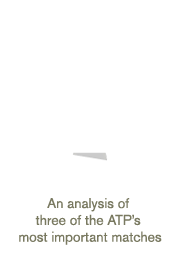

MAKING OF
Corona Perspective is the result of a project that was in the making for an entire year that all started with an idea from JWT. Espada y Santa Cruz was responsible for the technical part of the project, implementing new technologies such as WEBGL, HTML5, and 3D rendering in real-time.
It’s an experimental project that’s not only a very useful interactive tool for fans, players and trainers, but, above all, a tribute to tennis.
ABOUT
Tennis.
It’s given us matches that have touched us like great works of art.
No matter if it’s being watched on the couch, or from the stands.
But, what if it could be seen from any point of view? Even from the inside of the match? Corona Extra, ATP sponsor, has made this happen.
From a JWT’s idea, software was developed by espadaysantacruz studio, which tracked the tennis ball’s trajectory of three of the most important ATP final matches. It allows the viewer to appreciate the match from never before seen perspectives.
A 360º and three-dimensional view of matches, interacting with each service, point or rally.
An astonishing tribute to tennis.
STEP 1
STEP 2

STEP 3